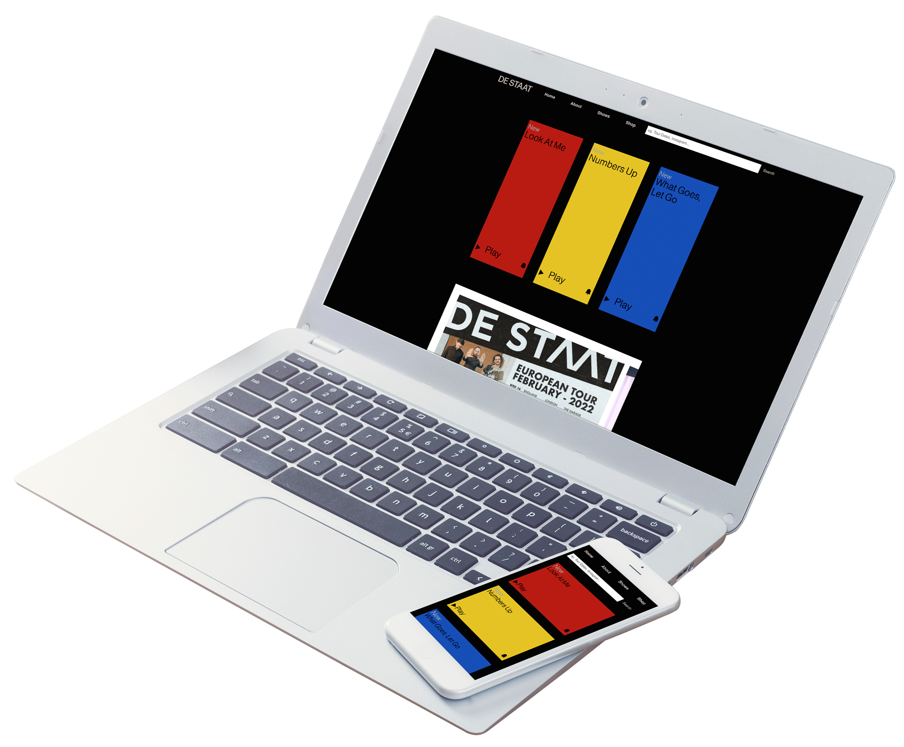

The Big Corona Board Game
Political board game about the Covid-19 pandemic
ROLE
CO-CREATOR
CONTEXT
PASSION PROJECT
PERIOD
2021
Introduction
This board game is developed by Eva Boogaard and Danique Lammertink, it's a political boardgame that takes place in the pandemic and the goal is to get fully vaccinated.
Process
I am very interested in politics - especially during the pandemic that was happening while me and Danique created this game. We wanted to create a game that was all about COVID in The Netherlands - with a healthy dose of humor.
We started creating a prototype that was a lot like monopoly, but realized that it wouldn't be very interesting to play. In the weeks that passed we worked on creating as many prototypes as possible and testing them to see if our game was fun to play.
The virus-shaped board was something we held onto till the end. We also created a lot of questions and assignments for the players if they arrive on a certain spot on the board. For example: "give a press conference about the new rules as if you are the leader of the party you chose".
End Result
Before starting the game, the players all choose a political party. This will affect further capabilities while playing. There’s different squares with different consequences, but the main goal of the game is to get fully vaccinated.
We created three physical copies of the game using cardboard, a UV printer, a 3D printer, thick paper and an ordinary printer.